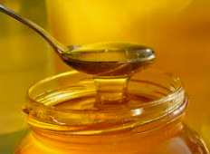

Bees are important
Now, let's come to the main point of this website. Why are bees important?
Well their are different sections on this page to tell you why exactly bees are important

Honey
Honey is a sweet, viscous food substance made by honey bees and some related insects. Bees produce honey from the sugary secretions of plants or from secretions of other insects, by regurgitation, enzymatic activity, and water evaporation. Bees store honey in wax structures called honeycombs
Honey has a lot of benefits as well
Honey is a good source of antioxidants. Raw honey contains an array of plant chemicals that act as antioxidants
Honey helps to heal wounds
Honey is helpful for digestive issues
Pollination
Bees are vital to a healthy environment and healthy economy. They're also simply beautiful and fascinating little insects. ... Bees are perfectly adapted to pollinate, helping plants grow, breed and produce food. They do so by transferring pollen between flowering plants and so keep the cycle of life turning.